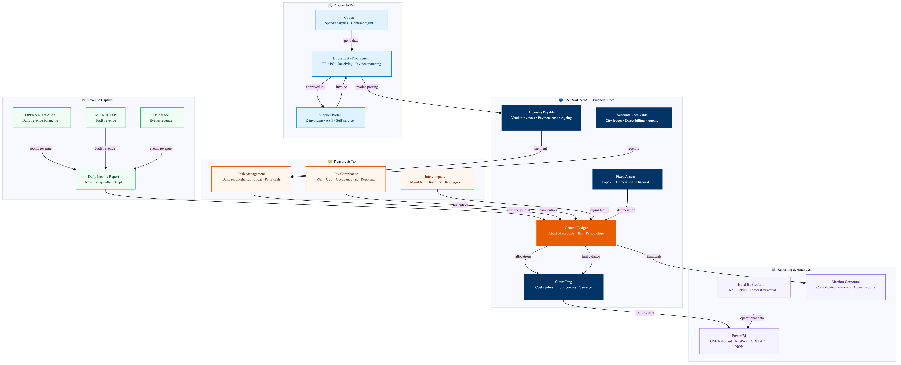

This diagram maps Marriott's finance and procurement technology stack centred on SAP S/4HANA. The procure-to-pay cycle runs from Birchstreet eProcurement through supplier onboarding, PO management, goods receipt, and three-way match before posting to SAP AP. Revenue flows from OPERA PMS night audit through the daily income report into SAP GL. The record-to-report cycle closes monthly with automated journal entries, intercompany reconciliation, and consolidated reporting to Marriott corporate. Power BI provides real-time financial dashboards for GMs, Directors of Finance, and above-property teams.